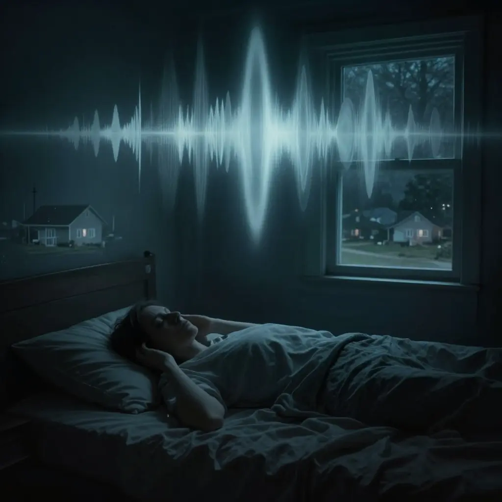

The Hum: A Mysterious Sound That Torments Thousands Worldwide Yet Remains Unexplained

Imagine lying in bed at night, trying to sleep. A low, steady droning sound begins to creep into your mind. It sounds like a diesel engine idling far away. It is a deep, throbbing rumble that never quite fades.
You get up and look outside. Nothing. There are no trucks, no machines, and no traffic. You ask your husband or wife if they hear it. They look at you blankly. You check every room, every appliance, and every vent. You turn off the power to the whole house. The sound gets louder.
You step outside into the night. It is silent. You go back in. The drone returns.
This is The Hum. It is one of the best-known unexplained sounds of our time. People have reported it in many countries. Only some of the people in an area hear it. Often, machines that record sound do not find a noise that matches. Most people cannot hear it at all. And no one can explain it for sure.
The Hum is not one single thing. It is a group of similar reports. The usual description is a low rumbling or droning noise. People compare it to an idling diesel engine, or to a deep drone that never stops.
Reports go back a long time. A study in 1973 looked at fifty people who complained of a hum. It found that the sound usually peaked at a low pitch of 30 to 40 Hz. Hz, or hertz, is a unit that measures how fast a sound vibrates. The sound was heard mostly in cool weather, often early in the morning.
Reports about who hears The Hum do not agree. In Taos, men and women heard it about equally, and middle-aged people were more likely to hear it. A different survey of hearers found an average age of about 40, and slightly more men than women. For the people who hear it, the most important fact is the simplest one. No one has been able to make it stop.
The most famous case first brought the phenomenon to the public. It is the Taos Hum, in Taos, New Mexico. Reports of a steady, unexplained low noise there led to a study in the early 1990s. It found that at least 2 percent of people could hear it. Each hearer described a different pitch, between 32 and 80 Hz.
For some, it was a small nuisance. Others found it very hard to live with. Some hearers say it keeps them from sleeping.
The complaints grew so loud that members of the US Congress from New Mexico asked for a formal investigation. A team came together from Los Alamos National Laboratory, Sandia National Laboratories, the Air Force Phillips Laboratory, and the University of New Mexico. In the summer of 1993, they recorded sound, ground shaking, and electric and magnetic signals in Taos. They found no signal that matched what the hearers described. The study did not give a clear answer.
The Taos Hum was the first to be famous, but not the only one. People near Bristol, in the United Kingdom, complained of a low hum from the late 1960s and 1970s. Reports have also come from Canada, Australia, Germany, and other places.
In 1999, people in Kokomo, Indiana, began to report a low hum. Some said it gave them headaches, tiredness, and nosebleeds. Doctors often blamed stress or aging. In 2002, news reports said that no source had been named.
In Windsor, Ontario, people reported a steady rumble that shook houses. Government studies pointed to Zug Island, an industrial area with steel blast furnaces just across the river in Michigan. Studies said the rumble was real. But they could not pinpoint the exact cause. Canadian officials passed the results to officials in Michigan. Auckland, New Zealand, also has reports, so the Hum is not only a Northern Hemisphere story.
A researcher named Glen MacPherson started the World Hum Map and Database Project. It is an online place where hearers can report what they hear and mark their location on a world map. His data suggests that The Hum is heard in many places and not only in a few.
In the last forty years, researchers have offered many explanations. The simplest are sources from industry and machines. Some hums were traced to a vacuum pump in Seattle and to a power transformer in South Carolina. One engineer said the cases he studied were near high-pressure gas pipelines. But most reported hums have no confirmed source.
The medical explanation is tinnitus. This is a ringing or buzzing in the ears. Some researchers think The Hum may be a low-pitched form of it. Another idea is spontaneous otoacoustic emissions. These are sounds that the ear makes by itself. But many hearers say The Hum feels completely different from tinnitus.
Tinnitus also does not easily explain why many people in one area report the same sound.
Another idea is ocean waves. They shake the ground all the time, in tiny shakes called microseisms. A 2015 study in Geophysical Research Letters showed how ocean waves make these shakes. But that study is about the Earth's own seismic hum. It is far too low for people to hear. So it does not by itself explain the Hum that people describe. Whether ocean waves play any part is not proven.
Other ideas include very low frequency radio signals, and the sound of human activity such as highways and industry. None has been proven.
For people who hear The Hum, it is much more than a curiosity. It can be a constant torment they cannot escape. The drone follows them into their homes, their bedrooms, and their quietest moments. Sleep becomes a struggle. It becomes hard to focus. And worst of all, almost no one else can hear it.
At first, friends and family may feel sorry for them. Over time, doubt creeps in.
Doctors may suggest medicine for sadness or worry. That treats the effect and not the cause, because the cause is unknown. Some researchers suggest talking therapy that helps people feel calmer about the noise. When hearers complain to local governments, they often meet confusion or dismissal. For some hearers, the suffering becomes very hard to live with. These stories show how important it is to take hearers seriously. The Hum is not only a puzzle about sound. It is a real problem for the people who hear it.
The Hum remains one of the unexplained puzzles of our world. Government agencies, national laboratories, and university researchers have investigated it. There is at least one global database. Yet no one has explained it for sure.
It may be industrial noise. It may be tinnitus. It may be a sound that comes from the Earth. It may be radio waves, which are a kind of energy. Or it may be all of these things, a mix of different causes that give a small share of people the same experience. That is one possible answer. What is certain is that the people who hear The Hum are suffering, and they deserve to be taken seriously. The Hum reminds us that the world still holds mysteries that science has not solved.
References & Further Reading
Wikipedia: The Hum — Overview, the 1973 study, Windsor and Zug Island, explanations, treatment
Wikipedia: Taos Hum — The early 1990s Taos study: at least 2 percent, pitch range, who hears it
📚 Recommended Reading: Greatest Mysteries of the Unexplained (on Amazon) — As an Amazon Associate, we earn from qualifying purchases.
Editorial note: The Hum is a real experience for many people, and some hums were traced to machines. For most reports, nobody knows the cause. See our Editorial Policy.